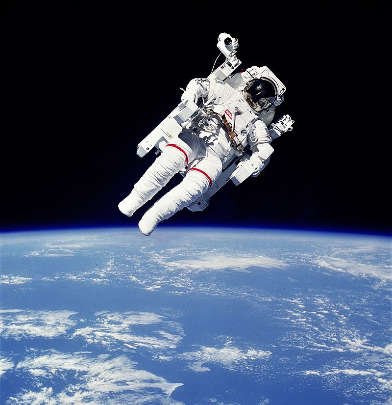
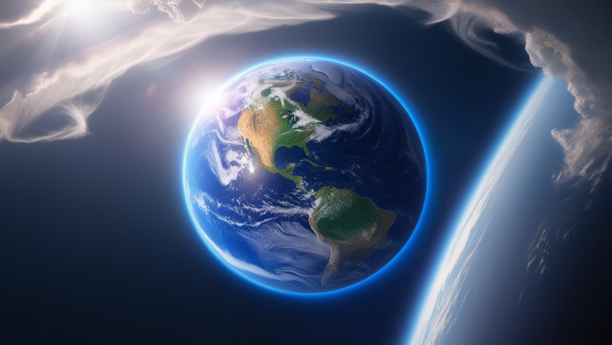
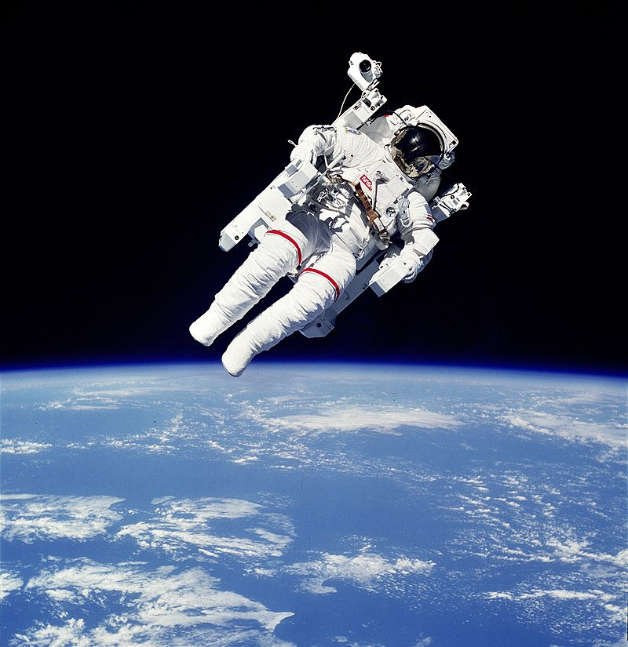
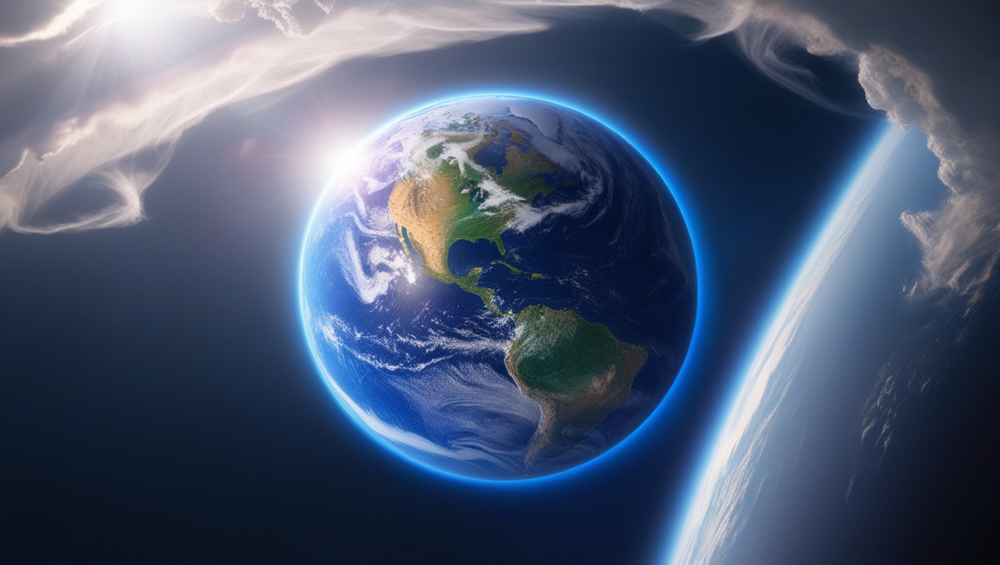
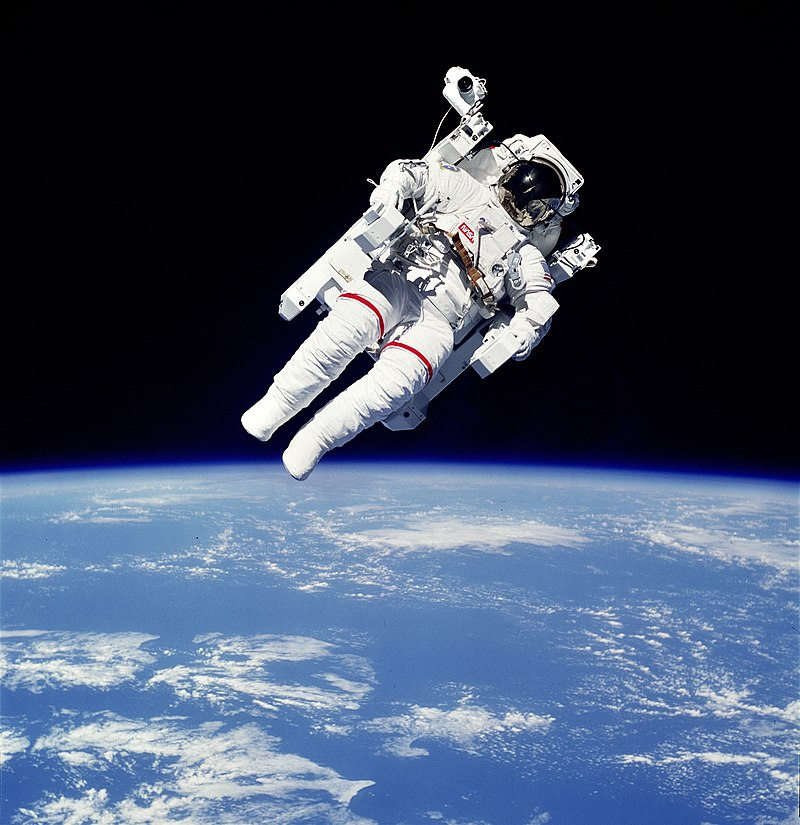
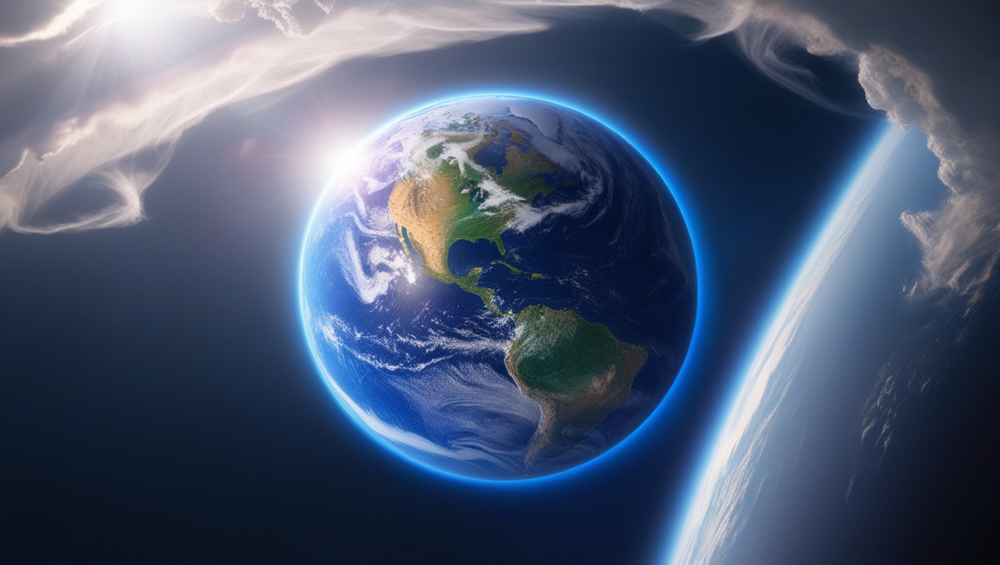
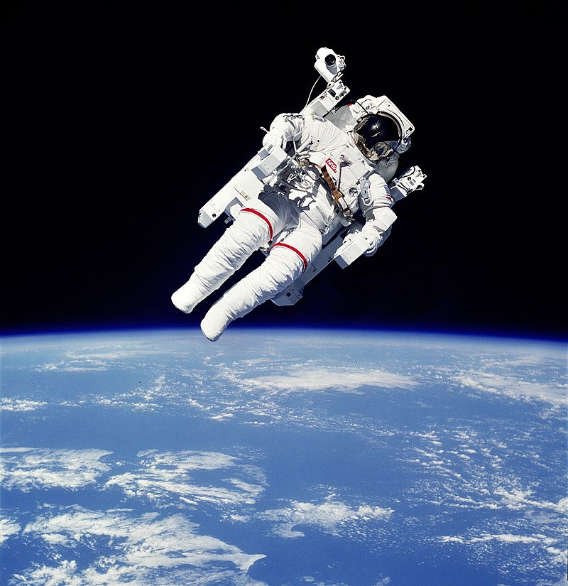
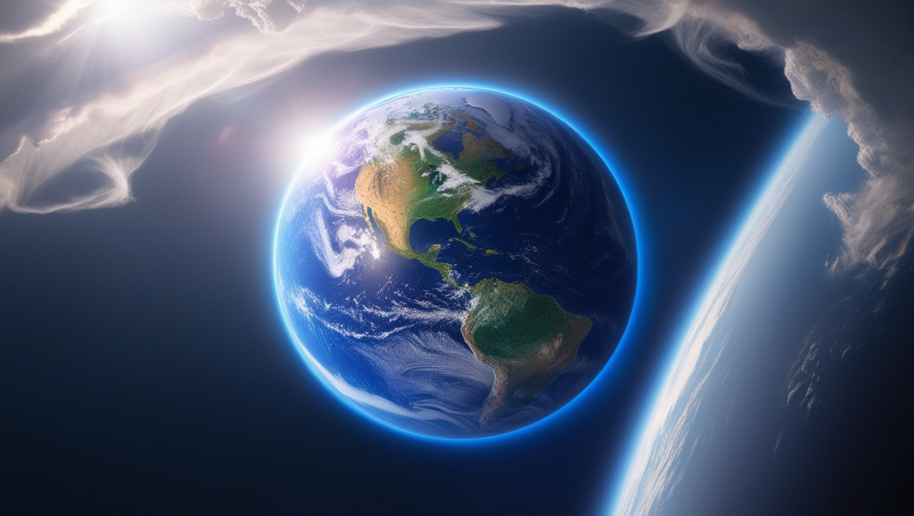

Space is a fascinating and mysterious frontier, full of mind-boggling facts that highlight its vastness and the incredible phenomena within it. Here are some real and surprising facts about space:
Space is completely silent
There’s no atmosphere in space to carry sound waves, so space is essentially silent. In space, you can’t hear anything unless you’re inside a spacecraft or on a planet where sound can travel through air.
The largest volcano in the solar system is on Mars
Olympus Mons, a massive shield volcano on Mars, is about 13.6 miles (22 kilometers) high—nearly three times the height of Mount Everest. Its base is about the size of the state of New Mexico.
A day on Venus is longer than a year on Venus
Venus has an incredibly slow rotation. It takes about 243 Earth days to complete one full rotation, but only about 225 Earth days to complete an orbit around the Sun. This means a day on Venus is longer than a year there.
Neutron stars are incredibly dense
Neutron stars, which are the remnants of massive stars that exploded in supernovae, are incredibly dense. A teaspoon of neutron star material would weigh about 6 billion tons on Earth.
There are more stars in the universe than grains of sand on all of Earth’s beaches
Estimates suggest that there are about 100 billion galaxies in the observable universe, each containing billions or even trillions of stars. The total number of stars could be more than 70 sextillion (that's 70 followed by 22 zeros), far outnumbering the grains of sand on Earth.
Space is expanding
The universe is expanding, meaning galaxies are moving away from each other. This discovery, first made by Edwin Hubble, was confirmed by observations of the cosmic microwave background radiation. The rate of expansion is accelerating, a phenomenon attributed to dark energy.
The largest known star is UY Scuti
UY Scuti, a red supergiant star located about 9,500 light-years away in the constellation Scutum, is the largest known star by radius and volume. Its radius is over 1,700 times that of the Sun. If placed in the center of our solar system, it would extend beyond the orbit of Jupiter.
A year on Mercury is only 88 Earth days
Mercury, the closest planet to the Sun, has an orbit that’s much faster than Earth’s. It only takes 88 Earth days to orbit the Sun, but its rotation is much slower—it takes about 59 Earth days for Mercury to complete one rotation on its axis.
Black holes can be millions or even billions of times heavier than the Sun
Supermassive black holes, which reside at the centers of most large galaxies, can weigh millions or even billions of times the mass of our Sun. The one at the center of the Milky Way, known as Sagittarius A*, has a mass of about 4 million times that of the Sun.
There may be rogue planets drifting through space
Rogue planets are planets that do not orbit a star but instead drift through space on their own. They are likely formed around stars but were later ejected due to gravitational interactions. Some scientists estimate there could be more rogue planets in the Milky Way than stars.
The largest structure in the universe is a galaxy filament
Galaxy filaments are vast cosmic structures made up of large-scale clusters of galaxies. These filaments form a "cosmic web" of dark matter and galaxies. The largest known structure is the Hercules-Corona Borealis Great Wall, which stretches across about 10 billion light-years.
The Hubble Space Telescope has taken over 1.5 million observations
Launched in 1990, the Hubble Space Telescope has revolutionized our understanding of space. It has taken over 1.5 million observations, allowing scientists to study everything from the formation of stars to the deepest reaches of the universe.
There is water on the Moon and Mars
Water exists in the form of ice on the Moon, particularly at the poles, where sunlight never reaches. Similarly, evidence of ancient water channels and frozen water reserves has been found on Mars, indicating that liquid water once existed there.
The Great Red Spot on Jupiter is a storm that’s been raging for centuries
Jupiter’s Great Red Spot is a giant storm that has been observed for at least 400 years. It’s so large that about three Earths could fit inside it. The storm's persistence is a mystery to scientists, though they believe it could be sustained by the planet’s internal heat.
Time slows down near a black hole
According to Einstein’s theory of general relativity, gravity bends space and time. The stronger the gravitational field, the more time slows down. Close to a black hole, time slows dramatically, meaning that an observer near the event horizon (the point of no return) would experience time much more slowly than someone far away.
The Moon is slowly drifting away from Earth
The Moon is gradually moving away from Earth at a rate of about 1.5 inches (3.8 cm) per year. This phenomenon, caused by tidal interactions between Earth and the Moon, is slowing Earth's rotation and making days a little longer over time.
Saturn's moon Titan has lakes of liquid methane
Titan, Saturn’s largest moon, is the only known body in the solar system besides Earth to have stable liquids on its surface. However, instead of water, Titan's lakes and seas are made of liquid methane and ethane.
The "Voyager Golden Records" carry sounds of Earth into space
The Voyager 1 and Voyager 2 spacecraft, launched in 1977, each carry a golden record with sounds and images representing Earth. This "message in a bottle" includes greetings in 55 languages, music from various cultures, and natural sounds like thunder and whale songs, intended for any potential extraterrestrial life.
These are just a few fascinating facts about the cosmos—there’s so much more to discover as we continue exploring the vast unknown!